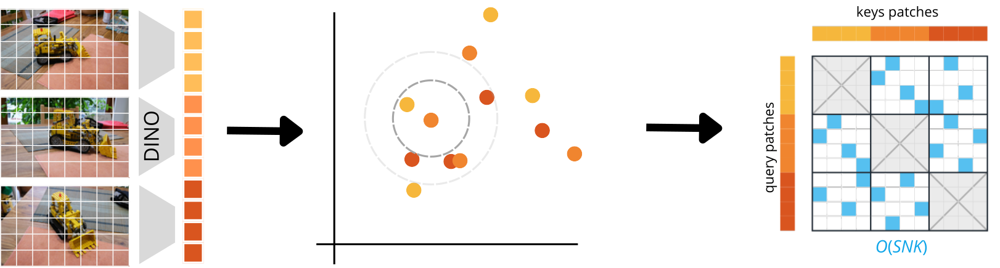

(Full) Attention is More Than You Need
Semester Project · EPFL Computer Vision Lab · 2026 on-going
The starting hypothesis was simple: VGGT would reach the same reconstruction quality if, instead of dense cross-attention across every patch of every frame, it only attended to the patches that actually correspond to the same 3D point. Everything else that dense attention computes is noise. If that holds, we can throw away most of the connections without losing anything.

There is a chicken-and-egg problem, though. Finding correspondences across views is precisely the all-to-all comparison we are trying to remove, and current matchers like RoMa and LoFTR compute them with their own full attention, so plugging them in would defeat the point. My workaround is to read pseudo-correspondences directly from the backbone's own DINO features, filtered by mutual nearest-neighbour matching. The backbone is then taught to produce good matches through a contrastive loss, using ground-truth correspondences only at training time. At inference the model builds its index from its own features, with no geometry needed.

Training VGGT with this sparse attention uses under 1% of the full-attention comparisons and still matches, and even beats, dense attention: 55.1 pose AUC@30 on ScanNet, five points above the full-attention baseline. Beyond quality, attention drops from quadratic to near-linear complexity, cutting memory drastically and making it feasible to run on very long sequences of dozens of frames, where dense attention simply runs out of GPU memory.